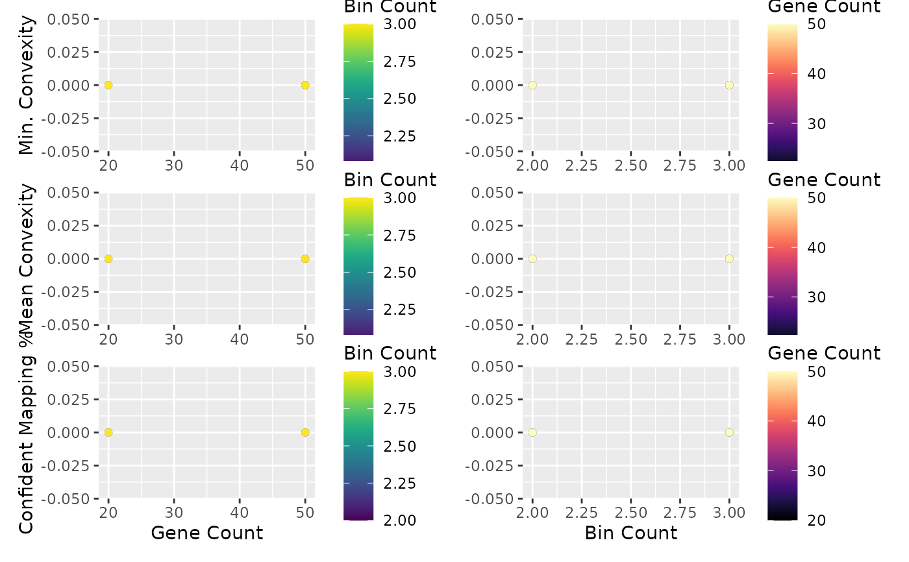

Plot the results of the search for good parameters
plot_find_best_params_results.RdPlot the results of the search for good parameters
Usage
plot_find_best_params_results(
find_best_params_results,
bin_count_colors = viridis::scale_color_viridis(option = "viridis"),
gene_count_colors = viridis::scale_color_viridis(option = "magma")
)Arguments
- find_best_params_results
Results dataframe from
find_best_params()- bin_count_colors
Optional, custom bin count color scheme.
- gene_count_colors
Optional, custom gene count color scheme.
Value
A plot showing how convexity changes as n_bins and n_genes
are changed. See find_best_params() for details on how to interpret.
Examples
ncells <- 70
ngenes <- 100
counts_matrix <- matrix(
c(seq_len(3500) / 10, seq_len(3500) / 5),
ncol = ncells,
nrow = ngenes
)
sce <- SingleCellExperiment::SingleCellExperiment(assays = list(
normcounts = counts_matrix, logcounts = log(counts_matrix)
))
colnames(sce) <- paste0("cell", seq_len(ncells))
rownames(sce) <- paste0("gene", seq_len(ngenes))
sce$cell_type <- c(
rep("celltype_1", ncells / 2),
rep("celltype_2", ncells / 2)
)
sce$pseudotime <- seq_len(ncells) - 1
genelist <- rownames(sce)
# Finding the best params for the BlaseData
best_params <- find_best_params(
sce, genelist,
bins_count_range = c(2, 3),
gene_count_range = c(20, 50),
pseudotime_slot = "pseudotime",
split_by = "pseudotime_range"
)
best_params
#> column_label bin_count gene_count min_convexity mean_convexity
#> 1 1 2 20 0 0
#> 2 2 2 50 0 0
#> 3 1 3 20 0 0
#> 4 2 3 50 0 0
#> confident_mapping_pct
#> 1 0
#> 2 0
#> 3 0
#> 4 0
plot_find_best_params_results(best_params)
